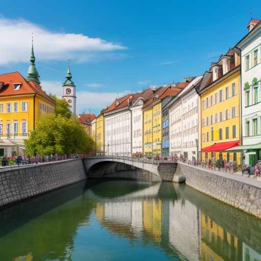
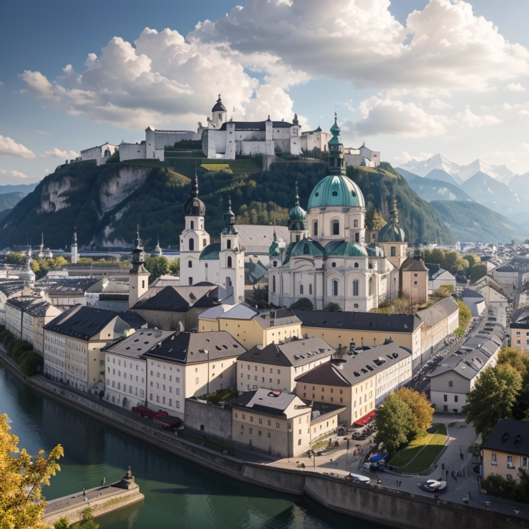
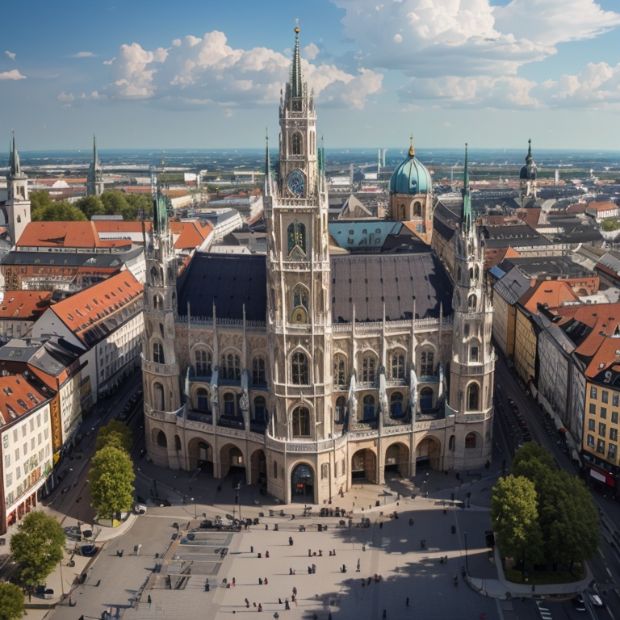
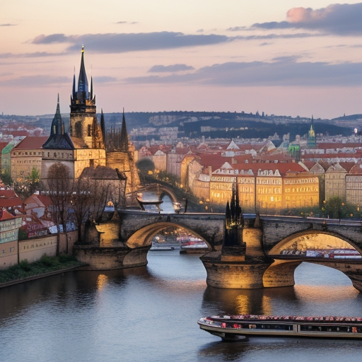
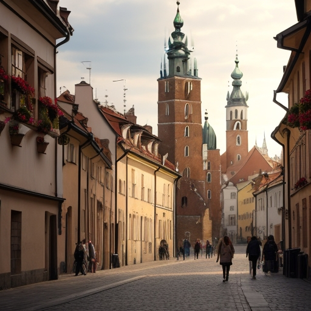
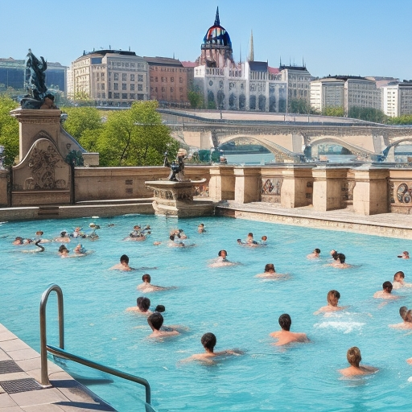
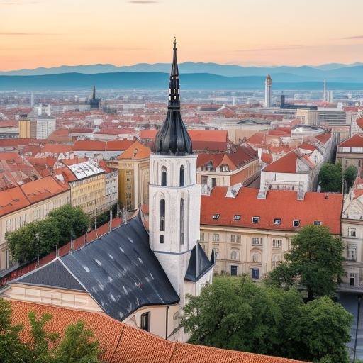
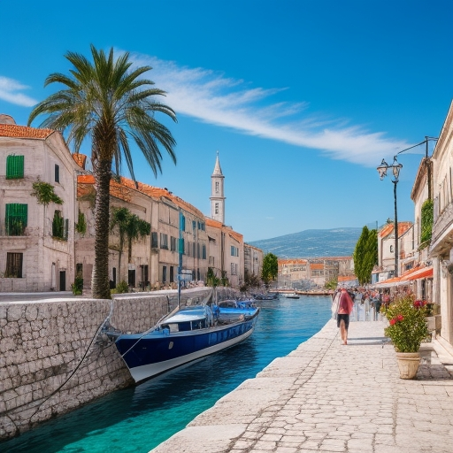

Aquí puedes encontrar información sobre los países de nuestra ruta.
Venecia
Venecia, conocida como 'La Ciudad de los Canales', es perfecta para pasear por sus calles adoquinadas y disfrutar de la arquitectura renacentista. En un día puedes explorar la Plaza de San Marcos, dar un paseo en una góndola (¡comparte el costo con amigos!) y disfrutar de la comida local en puestos callejeros.
Liubliana
Liubliana, la capital de Eslovenia, es una ciudad encantadora con un casco antiguo bien conservado y una atmósfera relajada. El castillo ofrece vistas panorámicas de la ciudad, y el Puente de los Dragones es un símbolo emblemático. Disfruta de un paseo a lo largo del río Ljubljanica y explora la rica historia y cultura de la ciudad en sus museos y galerías.

Salzburgo
Salzburgo, la ciudad natal de Mozart, es conocida por su encanto barroco y su hermoso entorno alpino. Puedes visitar la Casa de Mozart y disfrutar de la música clásica en uno de los festivales de la ciudad. Explora su casco antiguo, con sus calles adoquinadas y plazas pintorescas.

Munich
Munich, la capital de Baviera, ofrece parques y lugares de interés económicos. Disfruta de la Marienplatz y explora los parques de la ciudad. También puedes probar la comida local en biergartens (son jardines de cerveza al aire libre o terrazas donde se sirve cerveza, comida y a menudo música en vivo en un ambiente relajado y social.) asequibles.

Praga
Praga, la capital checa, es famosa por su encanto gótico. Explora su icónico Puente de Carlos, admira la Plaza de la Ciudad Vieja y su reloj astronómico, y sumérgete en su rica historia y cultura.

Cracovia
Cracovia es un destino imprescindible en tu viaje. Explora su casco antiguo, donde encontrarás la impresionante Plaza del Mercado y la Basílica de Santa María. Visita el Castillo de Wawel para sumergirte en la historia de la ciudad. Además, no te pierdas el Barrio Judío de Kazimierz, lleno de encanto y vida.

Budapest
Budapest ofrece una amplia variedad de lugares interesantes para explorar. Visita el Castillo de Buda, sumérgete en la relajación de los baños Széchenyi y no te olvides de visitar la Basílica de San Esteban y el Parlamento Húngaro.

Zagreb
Zagreb, ofrece una rica experiencia cultural. Puedes comenzar explorando la histórica Plaza Ban Jelačić, luego dirigirte al Museo Mimara para disfrutar del arte y la historia. No te pierdas la majestuosa Catedral de Zagreb y el encanto de la Ciudad Alta, con sus calles empedradas y edificios históricos.

Split
Split, comienza explorando el impresionante Palacio de Diocleciano, un sitio del Patrimonio Mundial de la UNESCO. No te pierdas la Catedral de San Duje y el Templo de Júpiter. Para disfrutar del entorno natural, visita la colina Marjan para vistas panorámicas de la ciudad y sus playas locales. Además, si tienes tiempo, no te pierdas la Cala Kašjuni, una hermosa cala que merece la pena visitar.
